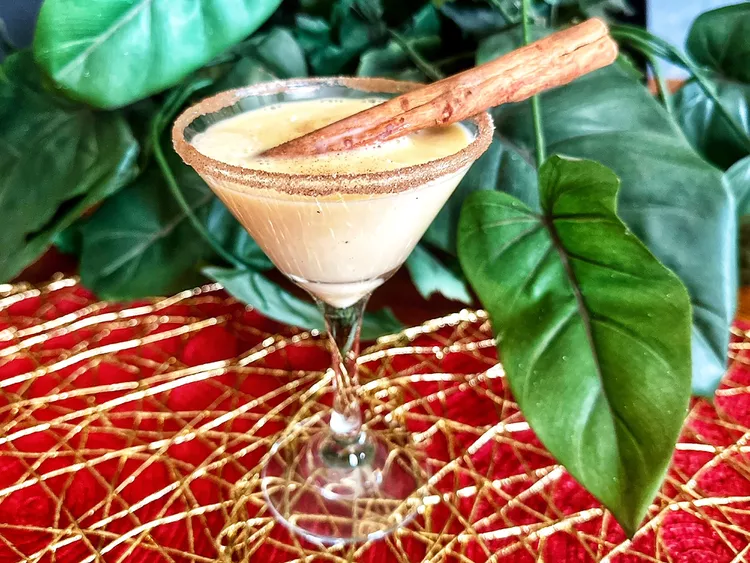

Eggnog Martini

Description
This eggnog martini, with eggnog, vodka, and Irish cream, is creamy and delicious, a perfect cocktail for holiday
parties.
Ingredients
- 1 teaspoon brown sugar, or as needed
- 4 fluid ounces eggnog
- 1 1/2 fluid ounce vodka
- 1 1/2 fluid ounce Irish cream liqueur, such as Bailey's®
- sprinkle of ground cinnamon
- cinnamon stick for garnish (optional)
Steps
- Pour brown sugar onto a plate. Pour a splash of eggnog on another plate and dip the rim of the glass in
eggnog and then in brown sugar.
- Fill a cocktail shaker with ice. Add eggnog, vodka, and Baileys. Close the shaker and shake until the
outside of shaker is frosted, about 30 seconds. Pour into the prepared glass and sprinkle with cinnamon.
Home